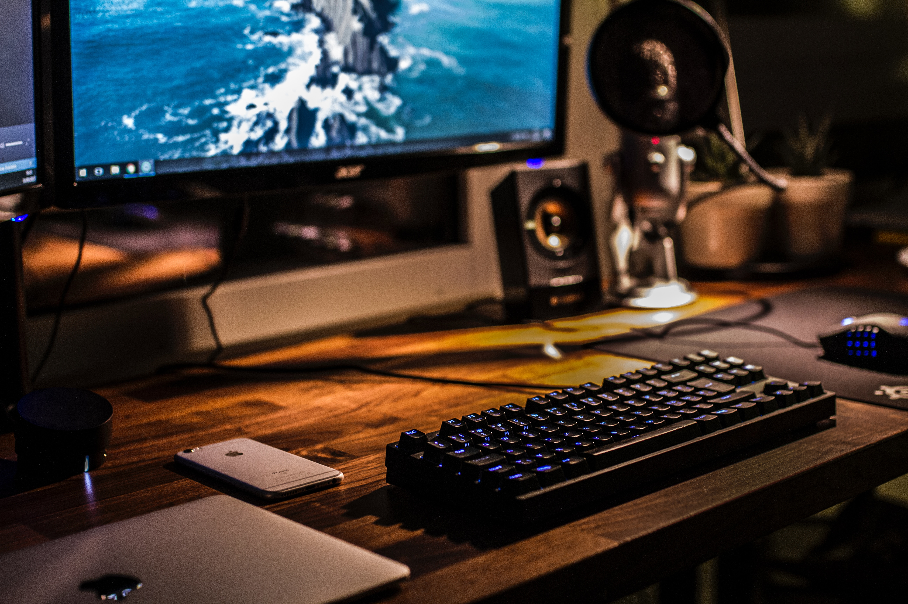

마우스, 키보드, 키패드[8], 헤드셋 뿐만이 아니라, 엑스박스360 전용 컨트롤러, 게이밍 태블릿, 게이밍 노트북 같은 것을 개발해서 신생 기업치고는 유사 브랜드에 비해 매우 높은 점유율과 성장률을 보여주고 있다. 마우스 제품군에서 가장 유명한 제품은 역시 데스에더로, FPS 게이머를 중심으로 상당히 잘 팔린 레이저 마우스의 대표작이라고 할 수 있다. 고급 피시방에도 보급이 된 편.
자사 로고는 뱀 3마리가 트리스켈리온의 모양을 이루고 있는 것이다. 제품들의 이름도 뱀의 이름에서 따온 것이다, 특이하게도 애플의 사과 스티커처럼 제품 박스 안에 브랜드 로고 자체를 상품화시킨 문양의 스티커가 들어가 있다. 심지어 저 문양이 들어간 티셔츠까지 판매한다.
마우스패드[10]를 포함한 대부분의 제품에는 저 문양에 LED가 들어오는데[11] 상당히 멋스럽다.
대부분 제품군의 디자인은 검정을 베이스로 초록색 LED를 사용한다.
회사 초기에는 마우스 엔진 기술이 없었고 각 제품마다 소프트웨어를 설치해야 하는 불편함이 있었지만, 최근에는 자사의 소프트웨어인 RAZER Synapse 및 직접 제작한 듀얼 4G 레이저 센서를 활용하여 다른 브랜드의 게이밍 마우스와 비교해도 꿀리지 않는다.
게이밍 제품을 표방하는 회사 특성상 드라이버 자체도 이것저것 셋팅의 폭이 넓은 편이며 어지간한 기능은 대부분 지원한다.[12]
무게감도 적당하고 정확도도 상당히 높은데다 반응속도도 굉장히 빠르다. 물론 기존에 널리 알려진 마우스와 굳이 비교하자면 그 차이가 큰 것도 아니고 사실상 프로게이머라도 느끼기 힘든 정도의 미세한 차이라 그런거 하나하나 세팅해가면서 쓰는 하드코어 유저가 아닌 이상 큰 메리트를 가지고 있다고 보기는 어렵긴 하다.
2014년에는 체리사의 키 스위치들의 특허가 만료된지라 중국의 공장에 위탁하여 카피 스위치를 생산하고 있다. 일반 체리 키보드보다 빨리 눌려져서 게임을 하기에 좋다고 광고하지만, 정작 게임덕들은 중국 카피의 품질과 내구도가 떨어진다며 체리사를 신뢰한다. 품질 관리 때문에 뽑기 운에 달려 있지만 각 키마다 키 압력이 균일하지 않고, 많이 사용했을 때 키 느낌이 변한다는 리뷰가 많다. 이 회사의 특성을 간단하게 말하자면 타사 제품에 비해 가격이 비싸서 가성비와 품질이 떨어지나, 뛰어난 디자인과 웬만한 성능을 가진 실험적인 제품들을 주로 파는 회사다. 레이저보다 좋은 성능을 가진 키보드나 마우스를 파는 회사들은 많지만, 안타깝게도 레이저만큼 대중화되어 있지 않다고 보면 된다.
최근에는 그 안좋던 가성비도 더욱 더 떨어지고있다. 똑같은 제품에 Chroma 기능만 추가하고 가격을 무려 4만원 가까이 올려버리는 만행을 저지르고 있다. 물론 기존의 제품은 단종. 심지어 오버워치 에디션은 거기에 라이센스값이라고 몇만원을 추가했으니 가성비는 저 하늘 멀리 날아가버린 셈.
